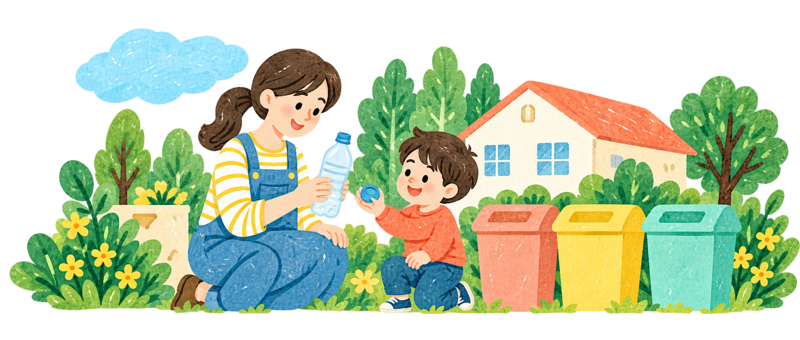

01 · ごみ分別 PROTOTYPE
わけかた
捨てる前の「どっち？」を、すっきり。
住んでいる市を選んで、品物の分け方を確認。自治体の公式案内や公開分別辞典へのリンクも、一緒に。
収録：8市。地域・品物によって情報の範囲が異なります。
ごみの分け方を調べるSMALL IDEAS, EVERYDAY LIFE.
「こんなのがあったらいいな」を、使えるかたちに。
公式の公開データから生まれた、試作アプリを集めました。

01 · ごみ分別 PROTOTYPE
捨てる前の「どっち？」を、すっきり。
住んでいる市を選んで、品物の分け方を確認。自治体の公式案内や公開分別辞典へのリンクも、一緒に。
収録：8市。地域・品物によって情報の範囲が異なります。
ごみの分け方を調べる
02 · 家族のくらし PROTOTYPE
おでかけ、まち選び、家族の備え。
子連れで立ち寄れる施設を探す。気になるまちをメモで比べる。災害の種類に合う避難場所を確認する。
おでかけ施設は東京都。避難場所は全国の公開データを収録。まちの比較は自分で入力するノートです。
家族のくらしを考える